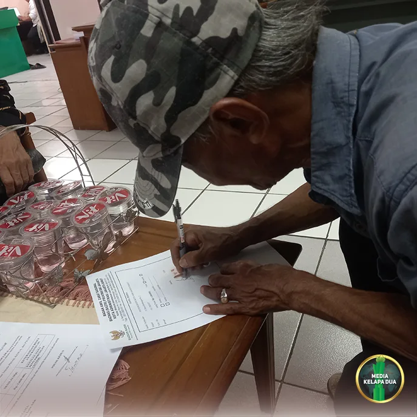

Berita Wilayah

Baznas Berikan Bantuan Pemasangan Listrik bagi Warga Kelapa Dua
Tanggal, 01 November 2026
MediaKada | Listrik bukan sekadar fasilitas pendukung, melainkan kebutuhan dasar yang sangat penting dalam menunjang berbagai aspek kehidupan masyarakat. Sebagai bentuk kepedulian terhadap warga kurang mampu (mustahik), Badan Amil Zakat Nasional (BAZNAS) menyediakan program bantuan pemasangan dan penyambungan listrik bagi masyarakat yang membutuhkan.
Salah satu penerima manfaat program tersebut adalah Bapak Isworo warga RT 007/08 Kelurahan Kelapa Dua, Kecamatan Kebon Jeruk, Jakarta Barat. Melalui program bantuan BAZNAS, warga tersebut menerima bantuan senilai Rp 1.000.000 untuk penyambungan kembali aliran listrik yang telah lama terputus.
Pemberian bantuan tersebut didasarkan atas keperdulian sosial dari pengurus wilayah dan pihak Kelurahan Kelapa Dua, kemudian diproses melalui mekanisme yang telah ditetapkan oleh BAZNAS.
Bantuan diserahkan langsung oleh pihak BAZNAS kepada penerima manfaat di Kantor BAZNAS Jakarta Barat, Lantai 8 Kantor Walikota Administrasi Jakarta Barat. Penyerahan bantuan ini turut disaksikan oleh Kepala Seksi Kesejahteraan Rakyat Kelurahan Kelapa Dua, Bangun Wiryawan, LMK RW 08 Kelurahan Kelapa Dua, serta Ketua RT 007 RW 08, H. Uus Agustino
Melalui bantuan ini diharapkan penerima manfaat dapat kembali menikmati akses listrik yang layak sehingga dapat mendukung aktivitas sehari-hari serta meningkatkan kualitas hidup keluarga. Program ini juga menjadi wujud nyata kolaborasi dan kepedulian sosial dalam membantu masyarakat yang membutuhkan.